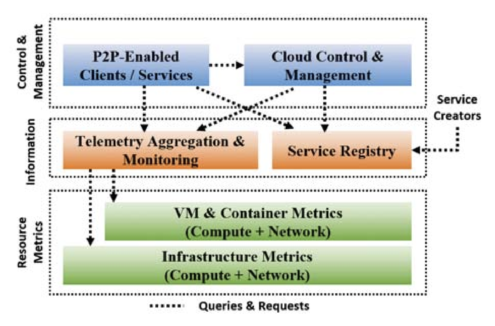

I am a Research Assistant at the MIT Sloan School of Management, currently advised by Professors David Rand, Gordan Pennycook, and Thomas Costello.
I study mechanisms of persuasion and belief formation through computational and experimental methods. My broad interests lie in Computational Social Science and Machine Learning.
Before MIT, I completed my master's at Carnegie Mellon University and my undergraduate degree in Computer Engineering at the University of Toronto.
Selected Publications

PhysarumSM: P2P Service Discovery and Allocation in Dynamic Edge Networks
Published in 2021 IFIP/IEEE International Symposium on Integrated Network Management (IM)